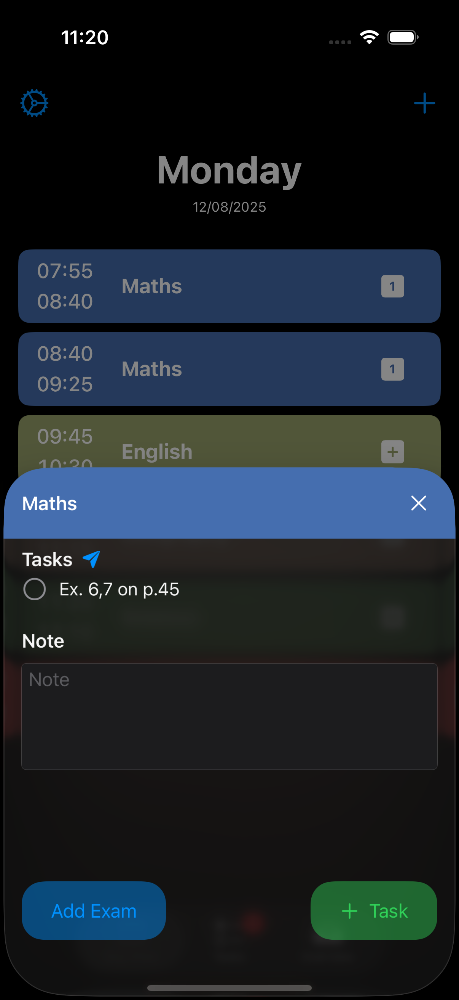
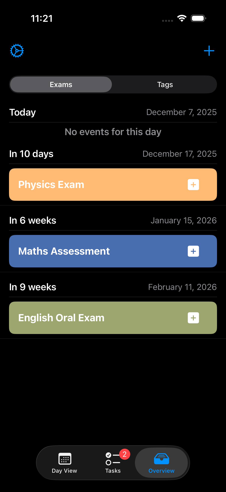

Details
Timetable
A clear day and week view, shaped around how you actually work.

Tasks & Sharing
Track assignments and to-dos, and share tasks with others.

Exams
Every exam laid out with its date, so nothing sneaks up on you.

Color Themes
Pick a palette and make your timetable look like your own.